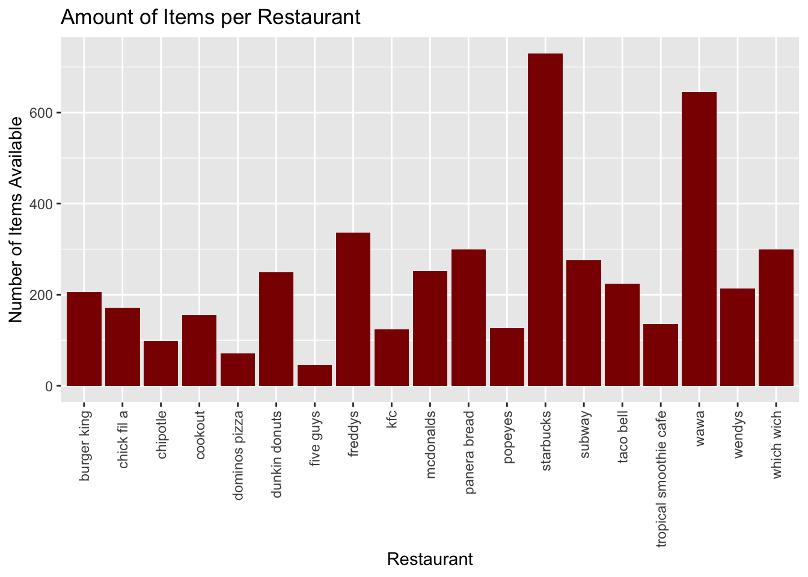
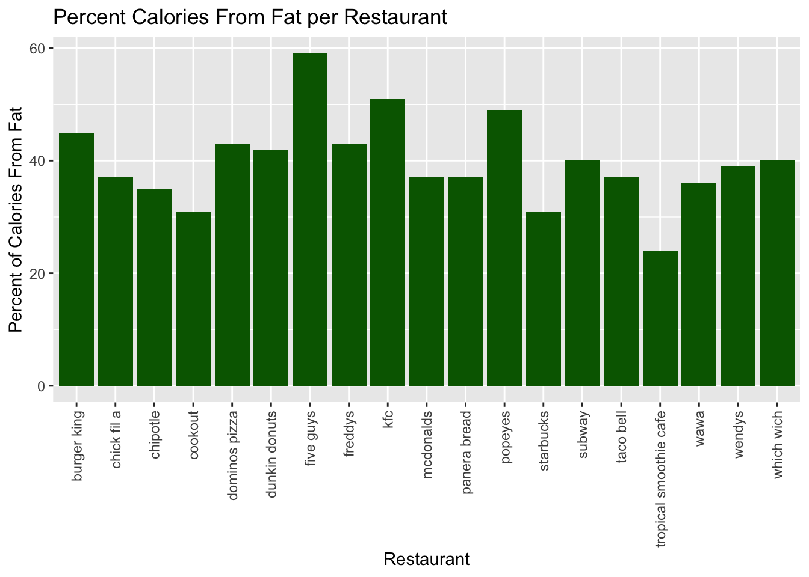
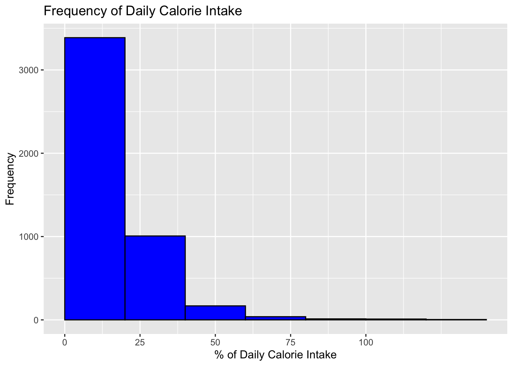
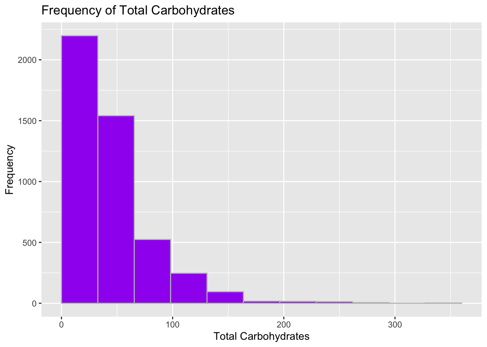
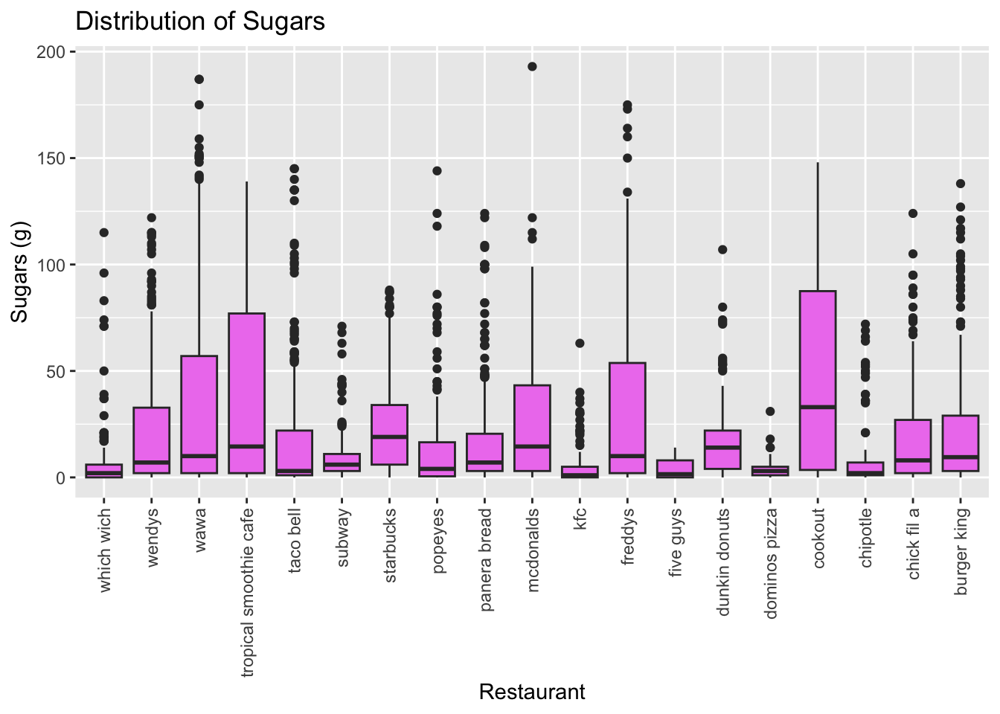
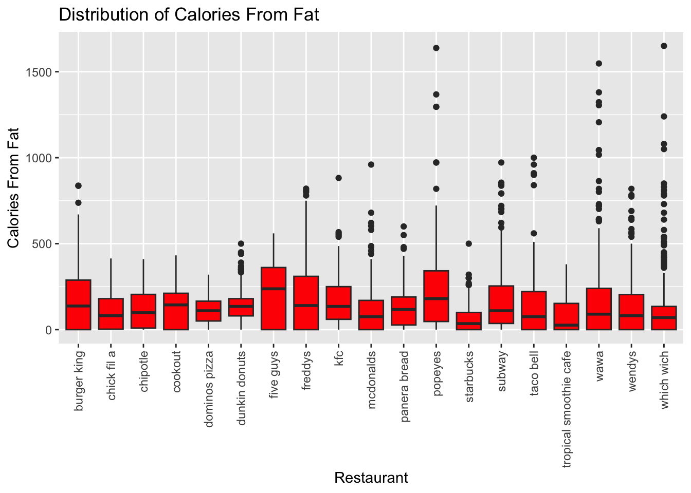
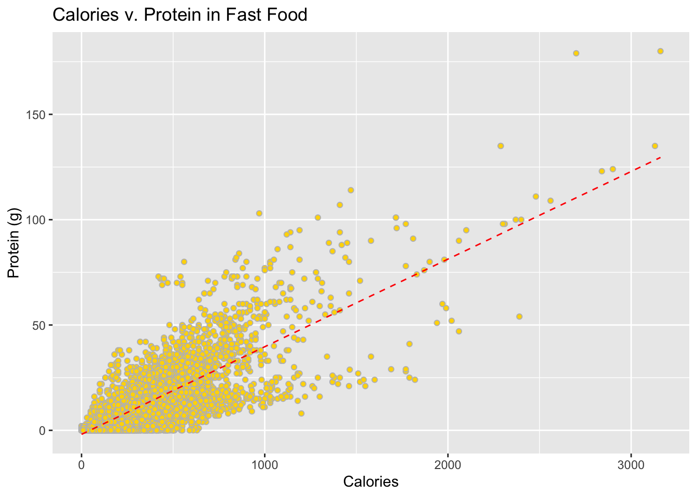
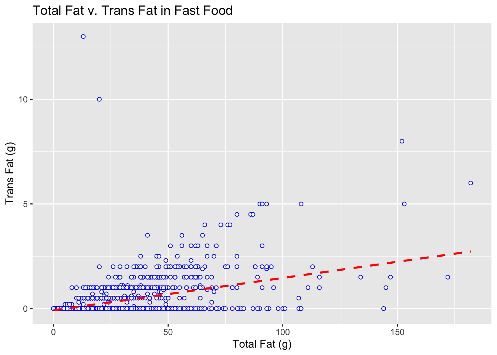
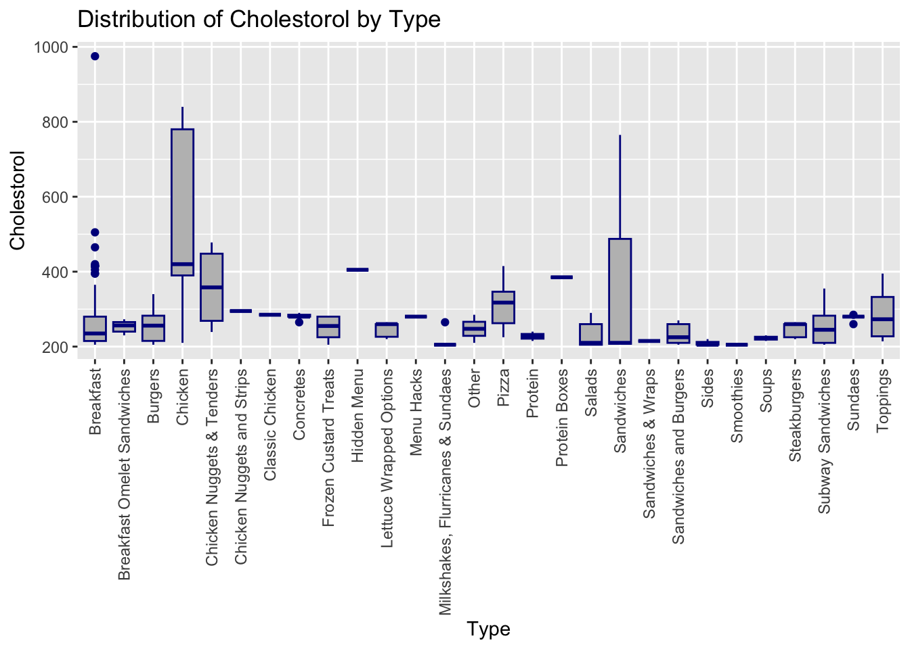
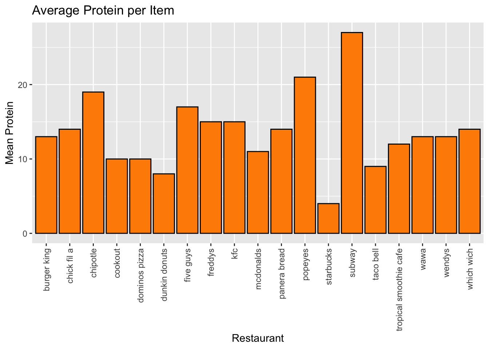

My project addresses a significant concern within the student community at William and Mary regarding the transition from mandatory meal plans to optional ones starting in the junior year. This shift often leads to increased reliance on fast food options among students, raising questions about the nutritional and financial implications compared to the university meal plan. My project aims to provide clarity on these matters by conducting a comprehensive analysis of the nutritional and financial disparities between meal plan offerings and commonly chosen fast food items. Additionally, the project will delve into the variations among fast food establishments, shedding light on the diverse choices available and their respective impacts. By undertaking this investigation, the project seeks to equip students with tangible insights into the decision-making process surrounding meal plans versus fast food, ultimately facilitating more informed choices regarding their dietary and financial well-being during their academic journey.
2. Research Questions
The primary objectives of this study are to glean insights into the nutritional offerings of fast food establishments in proximity to William and Mary’s campus and to contrast these offerings with those available through a meal plan. Additionally, the study aims to determine the financial implications associated with students opting out of a meal plan in favor of fast food consumption. The overarching research questions guiding this investigation are as follows:
Which fast food restaurant near William and Mary’s campus offers the most nutritious and well balanced food? What is the frequency at which a student can consume fast food and still maintain financial advantages compared to having a meal plan?
These research questions are designed to provide quantitative understanding of the nutritional content and financial considerations associated with fast food consumption relative to meal plan options, thereby informing students’ decision-making processes regarding their dietary and financial well-being during their academic tenure.
3. Data Source
The original source of my data is the TidyTuesday GitHub page, which compiled information sourced from fastfoodnutrition.org. I have personally verified the reliability of the source by cross-referencing some of the data. Additionally, fastfoodnutrition.org is an established platform known for its comprehensive and accurate nutritional information on various fast food items. Moreover, the use of an official “.org” domain adds to the credibility of the source.
However, upon closer inspection, this data set was not adequate to address my research question. I decided to scrape fastfoodnutrition.org personally to ensure I was able to obtain all the information I needed.
To enhance my current dataset, I will clean my data set of unnecessary data and I intend to incorporate additional data regarding the price of individual items, as well as nutritional and financial data specific to William and Mary’s dining options. For this purpose, I will utilize information available on William and Mary’s official website, considering it the most reliable and accurate source for such institutional data.
4. Exploratory Data Analysis
#Load packages and set any options or constants, ensuring all chunks of code are rendered; be sure to comment your code throughout the filelibrary(dplyr)
Attaching package: 'dplyr'
The following objects are masked from 'package:stats':
filter, lag
The following objects are masked from 'package:base':
intersect, setdiff, setequal, union
── Conflicts ────────────────────────────────────────── tidyverse_conflicts() ──
✖ dplyr::filter() masks stats::filter()
✖ dplyr::lag() masks stats::lag()
ℹ Use the conflicted package (<http://conflicted.r-lib.org/>) to force all conflicts to become errors
# reading in data setdata <-read.csv("~/Desktop/Spring 2024/Data Analytics with R/Final Project/Data/data.csv")
4a. Overview
4b. Notable Variables
Notable Variable 1: Daily Percent of Calories
Fast food restaurants are known for provide a large amount of calories and this can be a significant issue to many people, including college students. To make interpreting my data set easier, I created a variable to represent the amount of a healthy daily calorie intake is satisfied by each item. Through research, I learned that, on average, women should intake at least 2,000 calories per day and men should have at least 2,500 calories in order to maintain weight. With this information, I created a variable by dividing the calories of each item by 2,250 (the middle) and multiplying by 100 to get the percent of the a healthy amount of calories each item takes up. I believe this knowledge aides in interpreting if item are “too large” to consume frequently.
#Process for creating or modifying a variable...data$Daily_Percent_Calories <-round((data$Calories /2250) *100, digits =0)
Notable Variable 2: Percent Trans Fat
There are multiple types of fat and trans fat is regarded as the worst fat. To further visualize the harm an item might have, I created a variable by finding the ratio of Fats that is made up of trans fats, allowing me to further analyse which items are healthy and which aren’t.
#Process for creating or modifying a variable...data$Percent_Bad_Fat <-round((data$Trans_Fat.g / data$Total_Fat.g) *100, digits =0)
Notable Variable 3: High Colesterol
I created this variable to determine if an item is high in cholesterol. For individuals with high cholesterol, I felt this information necessary in making a choice between having a meal plan and not having one. In order to create this variable, I first researched and found that one should limit themselves to 300mg of cholesterol a day to avoid health complications. Considering one item as a meal and assuming a 3-meal diet, I determined that an item containing 90mg of cholesterol is considered “high in cholesterol”. I use 90mg instead of 100mg to adjust for those already at risk for heart disease.
data <- data %>%mutate(High_Cholesterol =ifelse(Cholesterol.mg >90, "yes", "no"))
4c. Summary Statistics
Please limit the use of summary() and describe() to one variable each. Other options include calculating correlations, calculating frequency counts, or identifying outliers (boxplot.stats()).
Variable 1: Cholesterol per Restaurant
This variable calculates the average amount of cholesterol per restaurant.
# Calculate summary statistics and comment your code so I can follow your processcholesterol_per_restaurant <- data %>%group_by(Restaurant) %>%summarise(avg_cholesterol =round(mean(Cholesterol.mg, na.rm =TRUE), digits =0)) %>%ungroup()# View the resultcholesterol_per_restaurant
This variable calculates the average number of calories and the average amount of calories from fat per restaurant. I use these numbers to by the mean ration of calories made up by fat. In retrospect, I believe I could have done this in an easier way.
# Calculate summary statistics and comment your code so I can follow your processcalorie_to_fat_per_restaurant <- data %>%group_by(Restaurant) %>%summarise(# calculate average number of calorie and round to 2 decimal placesavg_num_calories =round((mean(Calories, na.rm =TRUE)), digits =2),# calculate the average number of calories from fat and round to 2 decimal placescalories_from_fat =round((mean(Calories_From_Fat, na.rm =TRUE)), digits =2),# find the ration of calories that come from fat and round to 0 decimal place b/c it is a percentagecalories_to_fat_ratio =round((calories_from_fat / avg_num_calories) *100, digits =0)) %>%# remove the first 2 columns created during calculationsselect(-avg_num_calories) %>%select(-calories_from_fat) %>%ungroup()calorie_to_fat_per_restaurant
I created this variable to visualize the variety of options available for each restaurant. It counts the number of items within my data set grouping by restaurant to get the total amount of items associated with that restaurant.
# Calculate summary statistics and comment your code so I can follow your processnum_items_per_restaurant <- data %>%group_by(Restaurant) %>%summarise(item_count =n()) %>%ungroup()# View the resultnum_items_per_restaurant
This variable calculates the average amount of cholesterol in regards to type of food that each item fall into using the “Type” column in my data set. I create this to fully understand which types of fast food correlate to more cholesterol. This will also help with visualizations regarding what types of fast food to avoid in order to cut back on cholesterol.
# Calculate summary statistics and comment your code so I can follow your processcholesterol_by_type <- data %>%group_by(Type) %>%summarise(cholesterol =round(mean(replace(Cholesterol.mg, is.na(Cholesterol.mg), 0)), digits =0) ) %>%ungroup()cholesterol_by_type
This variable calculates the mean amount of protein available per restaurant. For those wanting to build muscle, I felt it necessary to determine with restaurants offer in terms of protein as that is an important nutrient for muscle recovery.
# Calculate summary statistics and comment your code so I can follow your processprotein_by_restaurant <- data %>%group_by(Restaurant) %>%summarise(avg_protein =round(mean(Protein.g, na.rm =TRUE), digits =0) ) %>%ungroup()protein_by_restaurant
5-10 sentences about any notable or surprising findings, as well as potential outliers…
Although due to my ignorance, I was surprised to find that bread doesn’t contain cholesterol. I was not knowledgeable of where each nutrient is found in food and found it notable that I am just finding this out now. I also was surprised to learn that subway had the highest average amount of protein. I thought that popeyes would be the highest as they nearly serve only chicken. I also thought that chipotle would be higher as I know many gym goers opt for chiptole as their post workout meal.
4d. Data Visualizations
Bar Plot 1
This plot represents the total number of items offered per restaurant. This is pretty straight forward however, I think it is notable that starbucks offers the largest amount of item. I imagine this is because I recorded data for each size per drink available.
#Creating the visualization...ggplot(data = num_items_per_restaurant, aes(x = Restaurant, y = item_count)) +geom_col(fill ="darkred") +theme(axis.text.x =element_text(angle =90, vjust =0.5, hjust=1)) +labs(y ="Number of Items Available",title ="Amount of Items per Restaurant")

Bar Plot 2
This plot visualizes the ratio of amount of calories derived from fat. This results of this visualization are expect. Fast food as a whole has a large amount of calories derived from fat. It is also unsurprising to find that Five Guys has the largest percent of total calories derived from fat.
#Creating the visualization...ggplot(data = calorie_to_fat_per_restaurant, aes(x = Restaurant, y = calories_to_fat_ratio)) +geom_col(fill ="darkgreen") +theme(axis.text.x =element_text(angle =90, vjust =0.5, hjust=1)) +labs(y ="Percent of Calories From Fat",title ="Percent Calories From Fat per Restaurant")

Histogram 1
This histogram displays the frequency of items that reach a certain percent of a healthy daily calorie intake. I found the results fairly surprising as I expected the plot to be more skewed to the 50% range. It seem that the majority of items contain below the 25% of daily calorie intake.
#Creating the visualization...plot_data <- data %>%filter(!is.na(Daily_Percent_Calories))ggplot(data = plot_data, aes(x = Daily_Percent_Calories)) +geom_histogram(boundary =0, bins =8, fill ="blue", color ="black") +scale_x_continuous(breaks =seq(0, 100, by =25)) +labs(y ="Frequency", x ="% of Daily Calorie Intake", title ="Frequency of Daily Calorie Intake")

Histogram 2
This plot visualizes the frequency of ranges of total carbohydrates among my data. Most fast food items are below 100 mg of carbohydrates, however I believe this is a high amount in general. I feel I need to look closer at the the higher frequencys to conclude if these foods are high in carbohydrates or not.
#Creating the visualization...plot_data <- data %>%filter(!is.na(Total_Carbohydrates.g))ggplot(data = plot_data, aes(x = Total_Carbohydrates.g)) +geom_histogram(boundary =0, bins =12, fill ="purple", color ="gray") +labs(y ="Frequency", x ="Total Carbohydrates", title ="Frequency of Total Carbohydrates")

Box Plot 1
This plot shows the distribution of sugars among my data. I thing this shows the lack of cleaning done to my data. There are a lot of outlier and I feel like I can’t intepret much from this data, outside of meaning my data set include a lot of extra data.
#Creating the visualization...plot_data <- data %>%filter(!is.na(Sugars.g))ggplot(plot_data, aes(x = Restaurant, y = Sugars.g)) +geom_boxplot(fill ="violet") +scale_x_discrete(limits = rev) +theme(axis.text.x =element_text(angle =90, vjust =0.5, hjust=1)) +labs(y ="Sugars (g)", title ="Distribution of Sugars")

Box Plot 2
This plot is visualizes the distribution of calories from fat per restuarant with my data set. Again, I have the same problem interpreting this plot and will need to clean my data to get more information from it.
#Creating the visualization...plot_data <- data %>%filter(!is.na(Calories_From_Fat))ggplot(plot_data, aes(x = Restaurant, y = Calories_From_Fat)) +geom_boxplot(fill ="red") +theme(axis.text.x =element_text(angle =90, vjust =0.5, hjust=1)) +labs(y ="Calories From Fat", title ="Distribution of Calories From Fat")

Scatter Plot 1
This scatter plot displays the correlation of calories and protein throughout my data set. Using it, I can determine that there is a positive correlation. This means that I can expect higher calorie fast food items to contain more protein to an extent.
#Creating the visualization...plot_data <- data %>%filter(!is.na(Calories)) %>%filter(!is.na(Protein.g))ggplot(plot_data, aes(x = Calories, y = Protein.g)) +geom_point(shape =21, color ="gray", fill ="gold") +geom_smooth(method ="lm", formula = y~x, se =FALSE,color ="red", linetype ="dashed", linewidth = .5) +labs(y ="Protein (g)", title ="Calories v. Protein in Fast Food")

Scatter Plot 2
This scatter plot represent the correlation of total fats and trans fats within my data set. I find this plot harder to interpret as it doesn’t quite seem like they correlate.
#Creating the visualization...plot_data <- data %>%filter(!is.na(Total_Fat.g)) %>%filter(!is.na(Trans_Fat.g))ggplot(plot_data, aes(x = Total_Fat.g, y = Trans_Fat.g)) +geom_point(shape =21, color ="blue", fill ="white") +geom_smooth(method ="lm", formula = y~x, se =FALSE,color ="red", linetype ="dashed") +labs(y ="Trans Fat (g)", x ="Total Fat (g)", title ="Total Fat v. Trans Fat in Fast Food")

Wild Card Plot 1
This box plot represents the distribution of cholesterol among types of food represented by my data set. It seems that foods in the chicken category are pretty well distributed. Its also interesting that breakfast has the most outlier. It’s worth noting that I limited this display to the items with the most cholesterol to ensure readability.
#Creating the visualization...plot_data <- data %>%top_n(200, Cholesterol.mg)ggplot(plot_data, aes(x = Type, y = Cholesterol.mg)) +geom_boxplot(fill ="gray", color ="darkblue") +theme(axis.text.x =element_text(angle =90, vjust =0.5, hjust=1)) +labs(y ="Cholestorol", title ="Distribution of Cholestorol by Type")

Wild Card Plot 2
This bar plot shows the average amount of protein per restaurant. I used this to visualize my summarized data and was surprised to see that the difference between the highest and lowest average protein wasn’t as large as I had thought.
#Creating the visualization...ggplot(data = protein_by_restaurant, aes(x = Restaurant, y = avg_protein)) +geom_col(fill ="darkorange", color ="black") +theme(axis.text.x =element_text(angle =90, vjust =0.5, hjust=1)) +labs(y ="Mean Protein",title ="Average Protein per Item")

4e. Challenges
Challenge 1: The biggest challenge I’ve faced so far is consistencies when finding the data. My original data set did not consist of all the fast food restaurant that I wanted to look at and although I could find alternative data sets for the individual restaurants, the columns and data included in the alternative data sets would be very different in terms of actual data given and accuracy of data. Because of this, I needed to use web scraping to extract the data myself. This in itself was very challenging as I had to learn how to web scrape using r before obtaining and analyzing the data. After, scraping all the nutritional data, I realize that the library I was using (rvest) would not work for scraping a the website I intended to use for scraping the prices of each item because it renders using javascript. I spent a lot of time trying to work through this problem and have not yet found a solution.
Challenge 2: Challenge 1 led to another challenge: time. I spent a large amount of time learning and scraping the data to build my data set. Because of this, my time was very limited in analyzing and interpreting the actual data. I also didn’t have time to clean and finalize my data set. Consequently, I had to adjust my time management and priorities to continue making progress throughout this project.
5. Preliminary Conclusions and Next Steps
So far, this most notable thing that I learned from my data is that it needs to be cleaned. I noticed that when scraping my data, I created entries for each toppings and ingredients.I believe that this created a lot of skewed results in my data. Despite this, I believe that my some of my finding won’t change after cleaning my data set such as the restaurant that offer the largest amount of protein and calories. I found most of my findings to be in-line with what I thought common fast food offered; however, I think it is interesting how much cholesterol some items contain.
For my next steps, I’d like to clean my data, add additional data regard price, and pull data regarding options offered by William and Mary’s meal plan. I believe this is a good start, but I have a lot of work before I can draw conclusions that will answer my research questions. Specifically, I want to analyze how price comes into play throughout my data. I also hope to have more unique visualizations using scatter plots and am particularly interested in exploring pie charts if possible.